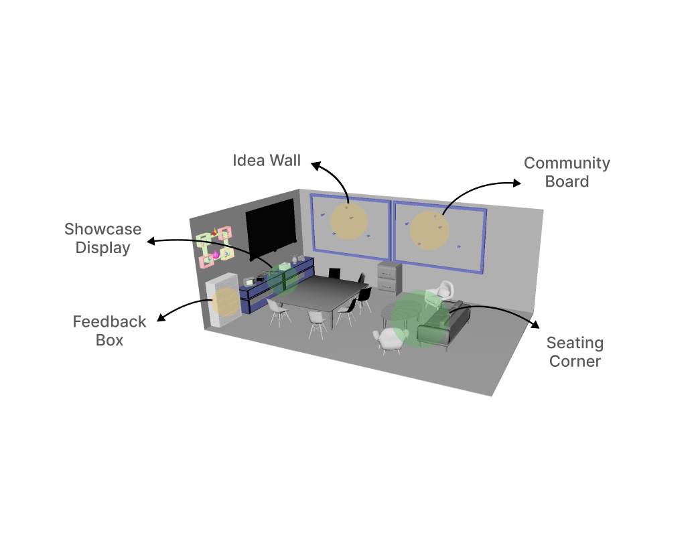
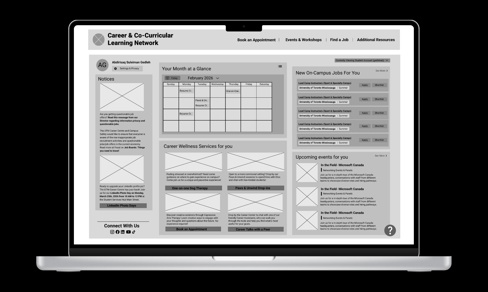

Community Corner @ UTM Makerspace
A physical and information system that helps students discover projects, share ideas, and join collaboration.
View ProjectCheng-Yen (Justin) Chang
UX Designer
I’m a CCIT & TCS student at the University of Toronto, focused on UX design. I enjoy mapping user flows, prototyping, and improving designs through feedback.
View My Work
A physical and information system that helps students discover projects, share ideas, and join collaboration.
View ProjectA concept ecommerce experience connecting brand storytelling with a clear shopping journey.
View Case Study
A dashboard redesign focused on schedule visibility, navigation, and task clarity.
View ProjectInterested in internship opportunities, collaboration, or design conversations?
justinyny.chang@mail.utoronto.ca